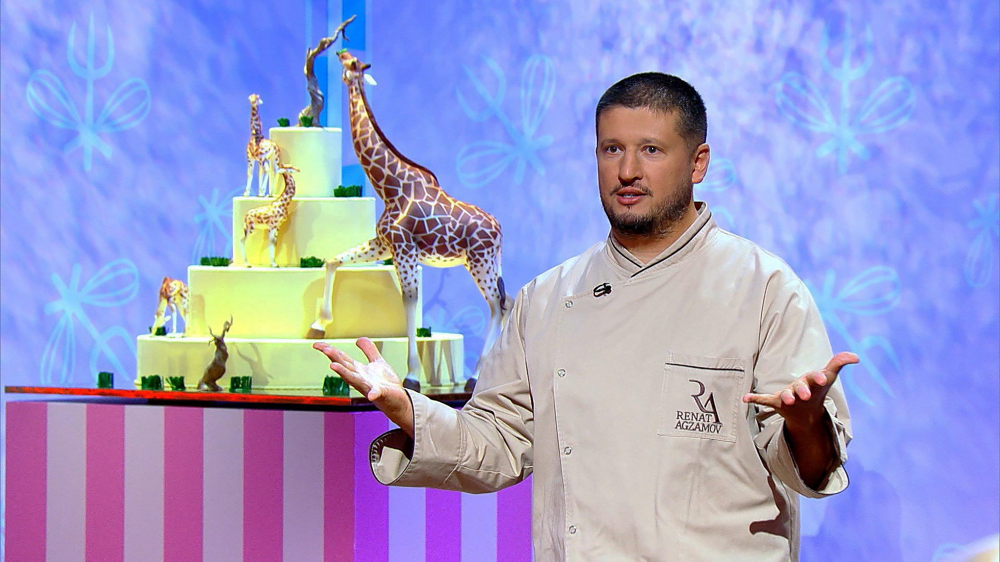
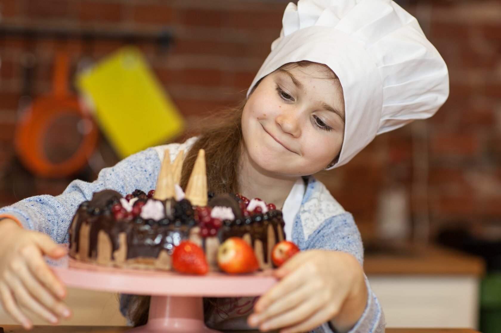

OrdinaryBakery
Вкусные булочки в любое время года
История успеха пекарни
С 1997 года мы, OrdinaryBakery, начали наш путь как небольшая семейная пекарня в маленьком городке. С самого начала мы уделяли особое внимание качеству нашей продукции, пекли по старинным рецептам с большой любовью и тщательностью.
Благодаря нашему высокому качеству и преданности клиентам, мы быстро стали популярными среди местных жителей. Наши уникальные рецепты и внимание к деталям привлекли все больше постоянных клиентов, и спрос на нашу выпечку постоянно рос. В течение нескольких лет мы активно развивались, расширяя ассортимент продукции и открывая новые точки продаж. Мы начали предлагать широкий выбор хлебобулочных изделий, тортов, пирогов и сладостей, все еще придерживаясь наших традиционных рецептов и высокого качества.
Следующий важный шаг в нашем успехе был внедрение современных технологий и методов управления производством, что позволило нам повысить эффективность и улучшить качество нашей продукции. Мы также активно использовали маркетинговые стратегии, чтобы привлечь новых клиентов и укрепить нашу позицию на рынке. Сегодня мы, OrdinaryBakery, - это известная и уважаемая пекарня, предлагающая широкий выбор высококачественной выпечки и сладостей. Наш успех основан на нашем тщательном подходе к качеству, наших традиционных рецептах и внимательном отношении к нашим клиентам, что делает нас одним из лидеров в индустрии хлебопекарного дела.
Благодаря нашему высокому качеству и преданности клиентам, мы быстро стали популярными среди местных жителей. Наши уникальные рецепты и внимание к деталям привлекли все больше постоянных клиентов, и спрос на нашу выпечку постоянно рос. В течение нескольких лет мы активно развивались, расширяя ассортимент продукции и открывая новые точки продаж. Мы начали предлагать широкий выбор хлебобулочных изделий, тортов, пирогов и сладостей, все еще придерживаясь наших традиционных рецептов и высокого качества.
Следующий важный шаг в нашем успехе был внедрение современных технологий и методов управления производством, что позволило нам повысить эффективность и улучшить качество нашей продукции. Мы также активно использовали маркетинговые стратегии, чтобы привлечь новых клиентов и укрепить нашу позицию на рынке. Сегодня мы, OrdinaryBakery, - это известная и уважаемая пекарня, предлагающая широкий выбор высококачественной выпечки и сладостей. Наш успех основан на нашем тщательном подходе к качеству, наших традиционных рецептах и внимательном отношении к нашим клиентам, что делает нас одним из лидеров в индустрии хлебопекарного дела.

Наш состав профессионалов
Ваш торт в надежных руках!

Бесплатные мастерклассы
Узнайте больше о кондитерском искусстве!